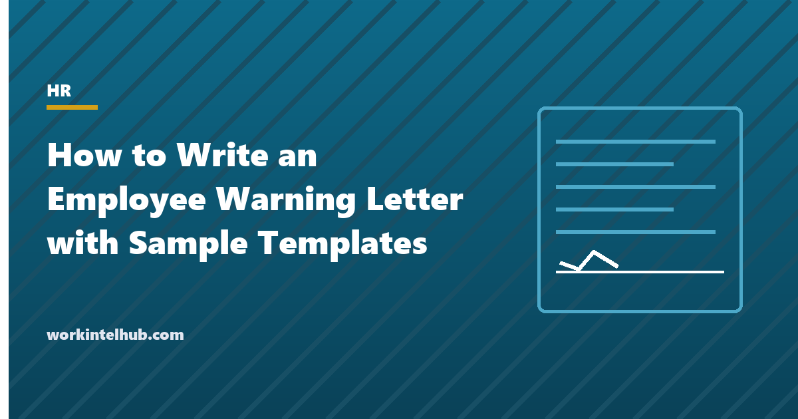

How to Write an Employee Warning Letter with Sample Templates

A warning letter has two readers: the employee, who needs to understand exactly what has to change and by when, and the person who may one day review the file, an HR director, an arbitrator, a judge, who needs to see that the employer was specific, consistent and fair. Letters that satisfy the first reader but not the second are the ones that lose unfair dismissal and retaliation claims; letters that satisfy neither are the ones that read "your attitude needs to improve".
This guide sets out the five elements of a warning that works, how warnings fit into progressive discipline, the protected reasons that must never be the subject of a warning, and five sample templates: first written warnings for attendance, performance and conduct, a final written warning, and a record of a verbal warning. The Excel workbook holds a warning log so consistency across the team can be checked. The write-up template has a generator for the same document.
Download the templates
Free files: Word, Excel and PDF
Three files, free, no email required. Word to edit, Excel to track, PDF to print or share.
Templates open in Microsoft Word, Excel, Google Docs and Sheets, LibreOffice and any PDF reader. Free to use and adapt for your organisation.
The five elements of a warning that holds up
| Element | What it looks like | What it is not |
|---|---|---|
| Facts | Dates, numbers, specific incidents: "late on March 3, 7 and 12 by 20 to 40 minutes" | "Frequently late" |
| Standard | The policy or expectation breached, by name | "Unacceptable" |
| History | The conversation or warning that came before | A first letter that reads as a last |
| Expectation | What must change, measurably, by when, reviewed when | "Improve your attitude" |
| Consequence | What happens if it does not, in the policy's words | A threat the policy does not support |
Where the letter sits in progressive discipline
Most employers use a sequence: a documented verbal warning, a first written warning, a final written warning, then termination, with serious misconduct allowed to skip steps. The letter at each stage references the one before, which is why the verbal warning record exists: a first written warning that cannot point to a prior conversation looks like an ambush. Give the employee the letter in a meeting, explain it, ask for their response, and invite a written response within a few days that is filed with the letter. The signature line is for receipt, not agreement, and says so. The progressive discipline policy sets the sequence, and the performance improvement plan is the alternative for performance cases where a structured support period is more appropriate than a warning.
What a warning can never be about
Protected absences (FMLA, ADA accommodation, state sick leave, pregnancy, military, jury duty) are not attendance occurrences, and a warning that counts them is retaliation however it is worded; the attendance template says so explicitly and invites the employee to flag a protected reason. Protected activity (complaints about discrimination, harassment, safety or wages; union activity; whistleblowing) cannot be the subject of a warning, and a warning that follows such a complaint closely in time needs to be unusually well documented. The attendance point system guide covers the absence rules; the termination letter covers the step that follows a final warning.
Consistency is the defence
- Log every warning with its category, level and outcome; the consistency sheet counts them.
- Two employees with the same record should get the same letter; if they did not, the difference is the claim.
- Warnings expire. Twelve months is common; the log calculates it.
- Keep the tone factual and the length to a page; adjectives are evidence of animus.
- Copy to the personnel file, not to colleagues.
Key takeaways
- A warning letter states facts with dates, the standard breached, the history, the measurable expectation with a review date, and the consequence.
- It follows a documented conversation and precedes a final warning; the signature is for receipt.
- Protected absences and protected activity can never be the subject; the letter invites the employee to say so.
- Log warnings and check consistency across similar cases; inconsistency is the claim.
Frequently asked questions
What should an employee warning letter include?
The specific facts with dates, the policy or standard breached, reference to the earlier conversation or warning, the measurable standard expected from now with a review date, the consequence of not meeting it, the support available, and an invitation to respond in writing. Signed by the manager, with a receipt line for the employee.
Does an employee have to sign a warning letter?
No. The signature acknowledges receipt, not agreement, and the letter should say so. If the employee refuses, note the refusal, the date and a witness; the warning stands.
How long does a written warning stay on file?
Policies commonly treat warnings as active for twelve months, after which they are not relied on for progressive discipline, though the record stays in the file. The warning log calculates the expiry.
Can I give a final warning without a first warning?
For serious misconduct, yes, if the policy allows skipping steps and the letter explains why. For attendance and performance, a final warning with no prior written warning is hard to defend; use the sequence.
What is the difference between a warning letter and a write-up?
In practice the same document; "write-up" is the informal term. Both record a disciplinary step in writing. The write-up template on this site generates the document from a form; this page provides the sample letters and the log.